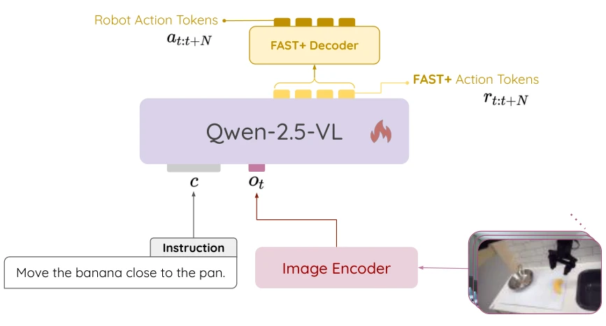
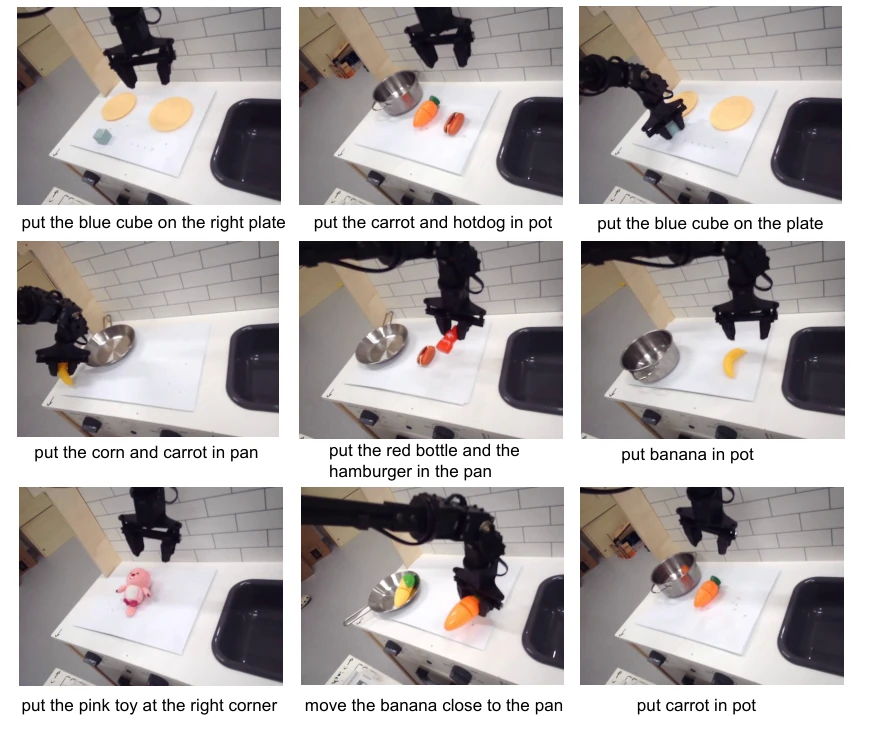
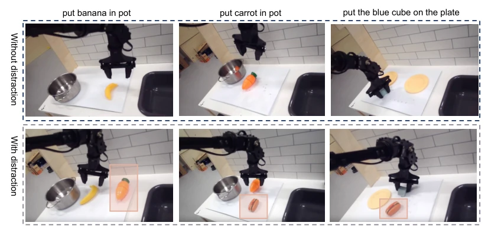
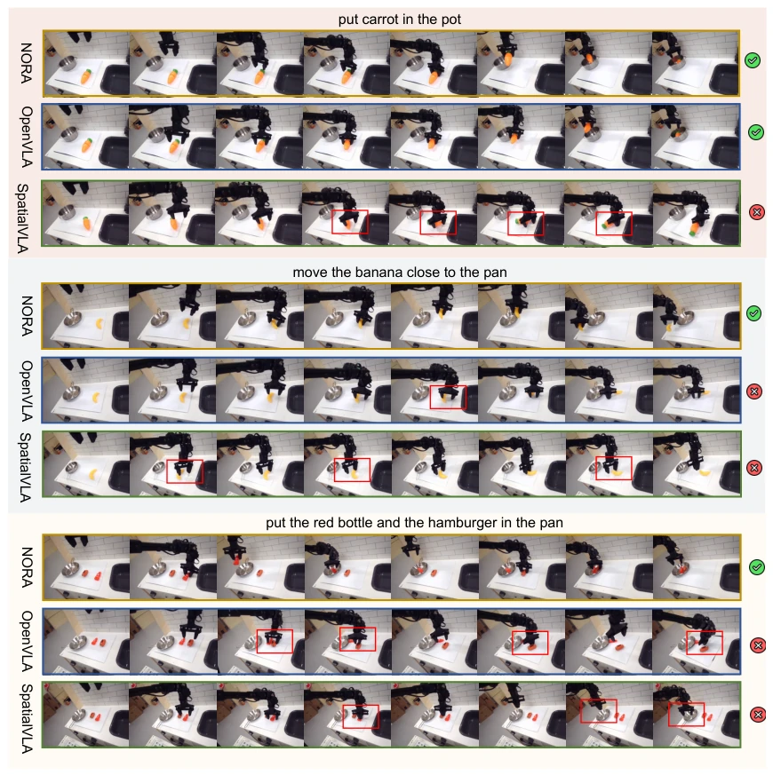
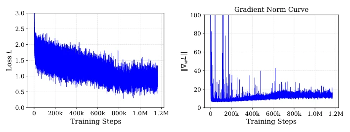
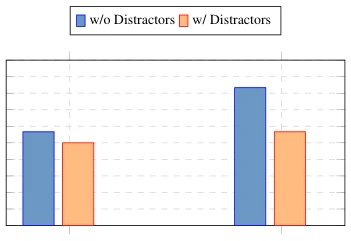

This paper attempts to play the "small cannon" game within the VLA model landscape. The NORA team authors clearly felt that the 7B-parameter OpenVLA (Kim et al., 2024) consumes too much VRAM, so they adopted Qwen-2.5-VL-3B (Bai et al., 2025) as the backbone, added the FAST+ tokenizer, and developed a 3B model. On the surface, this is indeed a "cost-effective" choice, outperforming OpenVLA and SpatialVLA (Qu et al., 2025) on WidowX, particularly in zero-shot grasping. However, do not celebrate too early; NORA-LONG is the king in simulation but hits a wall when deployed on real robots; action block prediction leads to significant cumulative errors, and grasping small objects is prone to failure. This once again proves that the 87.9% success rate in simulation may merely be a numbers game when facing real robots. Nevertheless, the open-source 3B model does lower the threshold, suitable for tinkering with consumer-grade GPUs, but do not expect it to be as versatile as the 7B model, as the idiom "though the sparrow is small, not all organs are complete" represents a fatal flaw in robot control, especially regarding stability issues during multi-object manipulation.
Existing VLA models such as OpenVLA (Kim et al., 2024) and TraceVLA (Zheng et al., 2024), while having strong reasoning capabilities, often have 7B parameters, resulting in huge computational overhead and making deployment in real-time robot environments difficult. The CoT mechanism, while improving planning, increases inference latency. The authors point out that most VLA models require fine-tuning for specific tasks, thus necessitating a smaller, more efficient model that can be fine-tuned on consumer-grade GPUs. NORA aims to balance performance and efficiency, solving the deployment challenges of large models in real robot control. Specifically, limitations in visual encoding of existing models lead to grasping failures, and high computational costs make real-time control impractical, urgently requiring lightweight solutions. Furthermore, existing models often rely on expensive hardware, limiting their application on edge devices, and NORA attempts to fill this gap.
The overall NORA architecture is based on Qwen-2.5-VL-3B (Bai et al., 2025) as the VLM backbone, with inputs being natural language instructions and visual frames. Action sequences are discretized via the FAST+ tokenizer (Pertsch et al., 2025), mapping continuous control signals to discrete tokens. The training phase uses the Open X-Embodiment dataset, adopting standard next-token prediction loss. The main innovations lie in two points: first, utilizing Qwen's visual semantic understanding to enhance grounding; second, adopting FAST+ to compress action tokens and improve generation efficiency. The model is divided into NORA (action block size 1) and NORA-LONG (action block size 5), the latter aiming to enhance long-horizon planning capabilities. During inference, the FAST+ decoder restores the token sequence back to actions. Training uses 8xH100, batch size 256, bf16 precision. Additionally, the authors compared single-step and block prediction strategies, verifying the effectiveness of blocking in simulation, but control frequency needs adjustment in real robots.

Figure 1: The overall architecture and inference flow of NORA.
Experiments were conducted on WidowX real robots and LIBERO simulation. Baselines include OpenVLA (Kim et al., 2024), SpatialVLA (Qu et al., 2025), RT-1 (Brohan et al., 2023c). The metric is success rate. In 9 real robot tasks, NORA achieved an average success rate of 56.7%, significantly outperforming OpenVLA (40%) and SpatialVLA (11.1%), especially on OOD objects and spatial reasoning tasks. In LIBERO simulation, after fine-tuning, NORA-LONG achieved an average success rate of 87.9%, outperforming OpenVLA (76.5%). However, ablation studies found that NORA-LONG caused collisions in real robot multi-object tasks due to action accumulation, and its grasping effect on small objects was not as good as NORA. The action block strategy was effective in simulation, but high-frequency control did not match in real robots. Additionally, environment interference tests showed that NORA still performed better than OpenVLA under interference, proving its robustness.

Figure 3: Real-world robot environments and task setups. We evaluate NORA across 9 diverse tasks to assess its instruction understanding, spatial reasoning, and multi-task motion planning capabilities.

Figure 5: Comparison of tasks with and without distraction.

Figure 7: Case study comparisons of NORA and baseline methods in real-world robotic tasks.
其他图片Other Figures

Figure 2: (a) Training Loss Curve; (b) Gradient Norm Curve.

Figure 6: Success rates of OpenVLA and NORA with and without distractors.